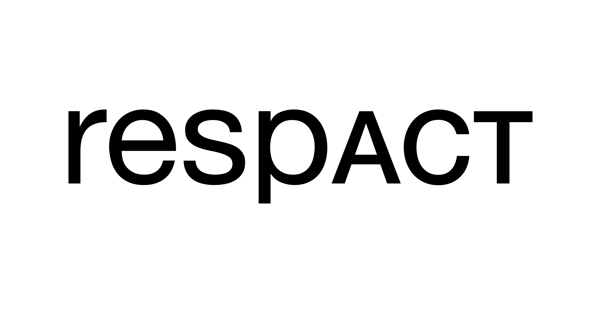
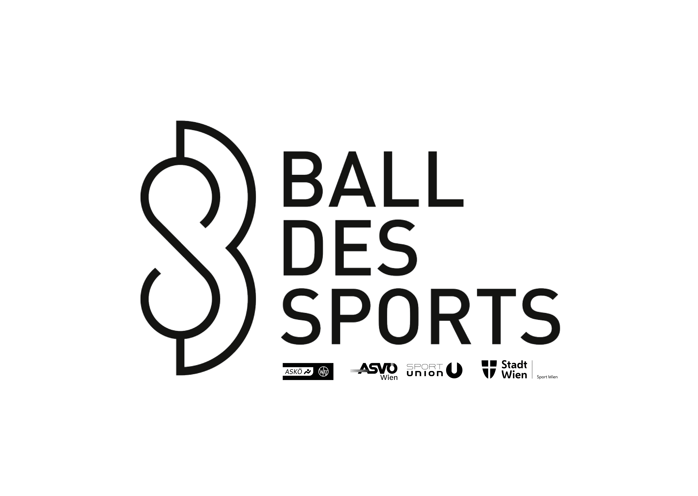
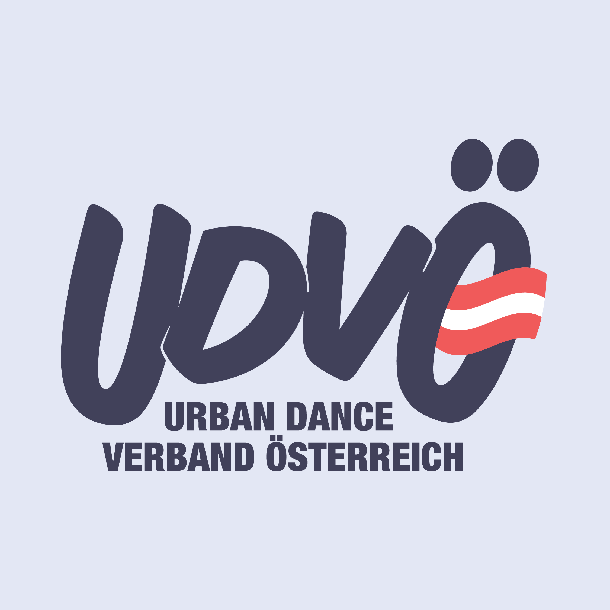
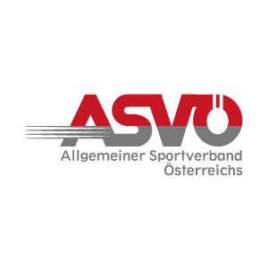
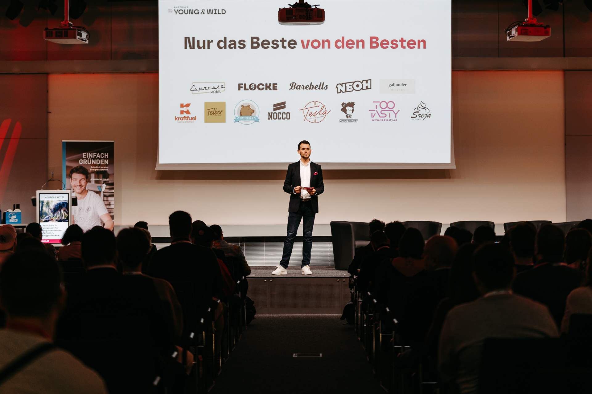

Ausgewählte Kontexte





Zusammenarbeit in unterschiedlichen Kontexten – von Executive-Formaten über Organisationen bis hin zu Hochleistungsumfeldern.
Zusammenarbeit mit Führungspersönlichkeiten, Organisationen und Formaten, in denen Klarheit, Präsenz und Verbindung entscheidend sind.




Zusammenarbeit in unterschiedlichen Kontexten – von Executive-Formaten über Organisationen bis hin zu Hochleistungsumfeldern.
Wer Nik auf der Bühne erlebt hat, kommt anders raus als rein. Hoch energetisierend, unterhaltsam und inhaltliche Tiefe in einem. Als Eventveranstalter freut es einen besonders, wenn die Teilnehmer mit einem Lächeln den Raum verlassen. Nik gehört bei unseren Veranstaltungen bereits zum Inventar und hinterlässt einen nachhaltigen, positiven Eindruck, weshalb unsere Teilnehmer besonders auch gerne wieder wegen ihm und seiner Energie wiederkommen. Es ist uns eine Riesen Freude mit ihm zusammenzuarbeiten und ihn als verlässlichen Speaker an der Seite zu haben.
CEO, Austria's Young and Wild Event FlexCo
Wir haben Nik Kleemann im Rahmen unseres Leuchtturmevents dem csrTAG 2023 zum Thema Sustainable Transformation - Taking Action Together als Keynote Speaker gebucht. Sein Vortrag „Veränderung ist Bewegung“ hat das Thema der nachhaltigen Transformation nochmals von einer neuen Perspektive geöffnet und unseren Teilnehmer*innen – über 400 Nachhaltigkeits- und Diversitätsbeauftragte sowie Führungskräfte mit Nachhaltigkeitsagenden – nicht nur Energie sondern auch ein positives, offenes Mindset mitgegeben. Die Stimmung in der Halle war fantastisch und die Präsenz von Nik Kleemann auf der Bühne beeindruckend. Wir freuen uns bereits auf zukünftige Gelegenheiten mit Nik Kleemann zusammen zu arbeiten.
Leiterin Kommunikation und csrTAG, respACT
Die Zusammenarbeit zeigt ihre Wirkung nicht in Konzepten, sondern im Führungsalltag.
Hoher Entscheidungsdruck, Abstimmungen ineffizient, Spannungen im Team
Klarheit in Kommunikation und Entscheidungsprozessen. Stärkung von Präsenz in kritischen Situationen.
Deutlich schnellere Entscheidungsfindung, klarere Rollen, weniger Reibung im Alltag.
Hohe Verantwortung, zunehmender Druck, Unsicherheit in zentralen Entscheidungen
Innere Klarheit, Stabilität unter Druck, Wirkung im Führungsteam
Mehr Ruhe in Entscheidungen, klarere Kommunikation, stärkere Positionierung als Führungspersönlichkeit.
In Keynotes und größeren Formaten entsteht Wirkung im Moment:
Impulse werden nicht nur verstanden, sondern erlebt – und bleiben dadurch anschlussfähig.

Wenn Sie einschätzen wollen, ob eine Zusammenarbeit in Ihrem Kontext sinnvoll ist, dann lassen Sie uns in den Austausch gehen.